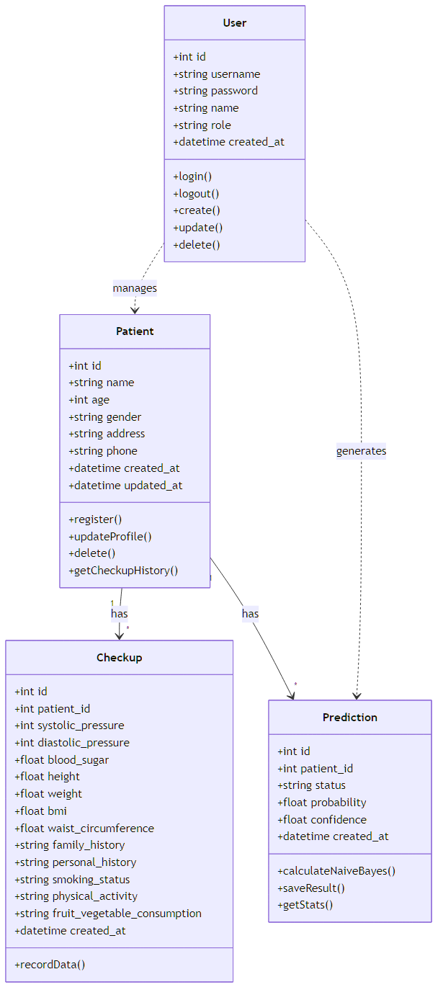
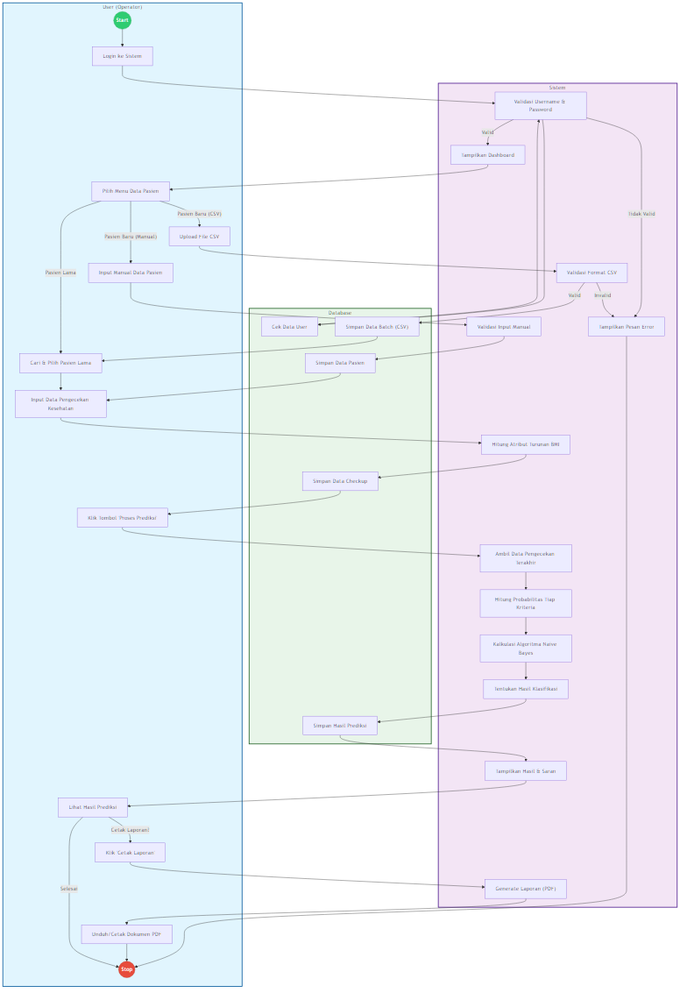
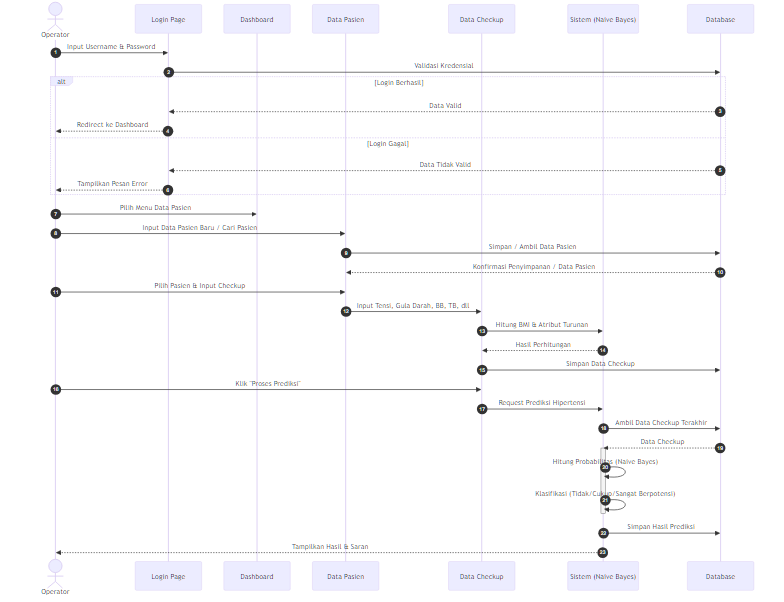

Kumpulan diagram arsitektur dan alur sistem
Menggambarkan struktur database dan relasi antar entitas dalam sistem (User, Patient, Checkup, Prediction).

Menggambarkan alur aktivitas lengkap mulai dari Login, Input Data, hingga Proses Prediksi yang melibatkan User, Sistem, dan Database.

Menggambarkan detail interaksi antar objek dan urutan pesan (message passing) dalam satu skenario proses utama.
